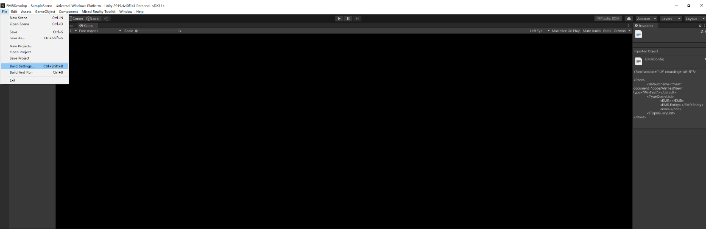
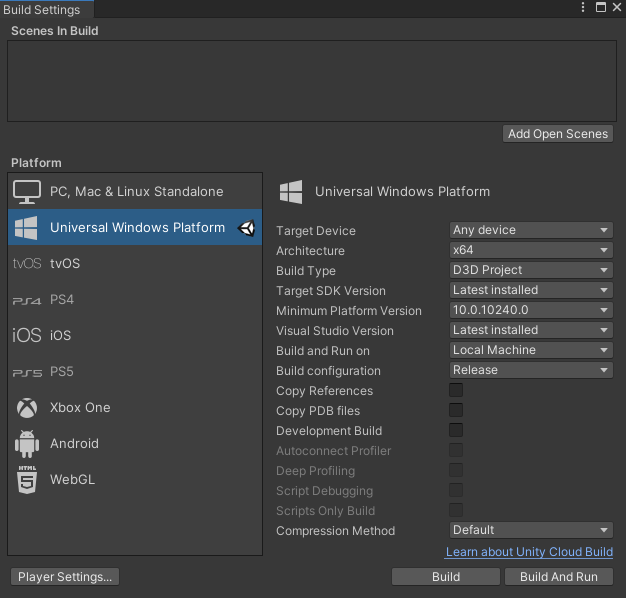
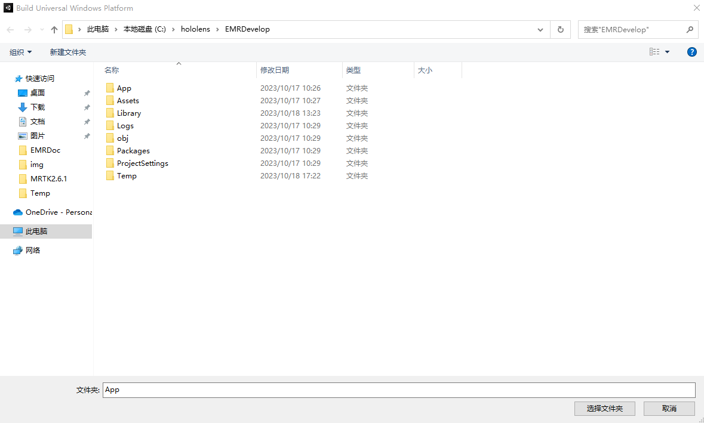
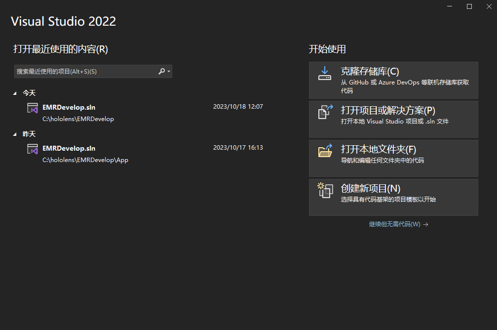
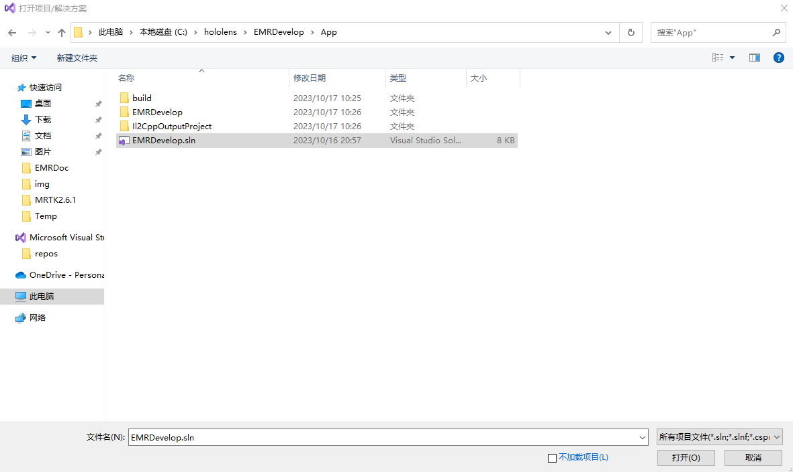
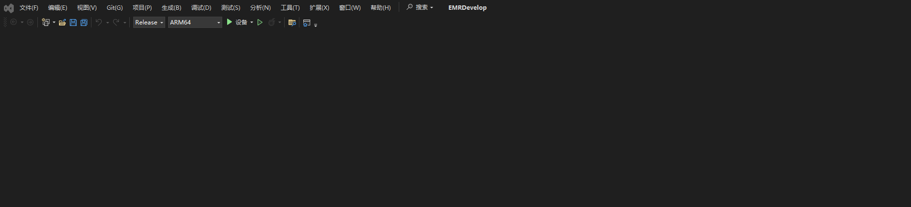
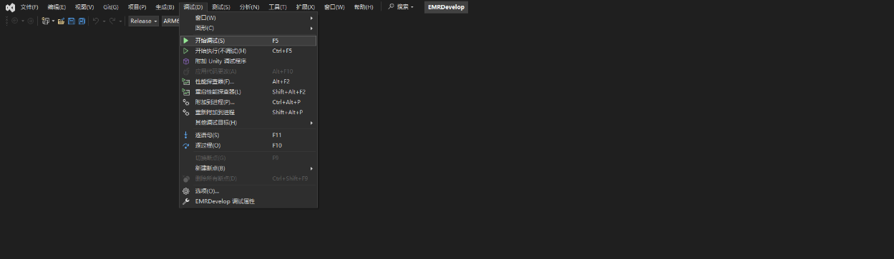
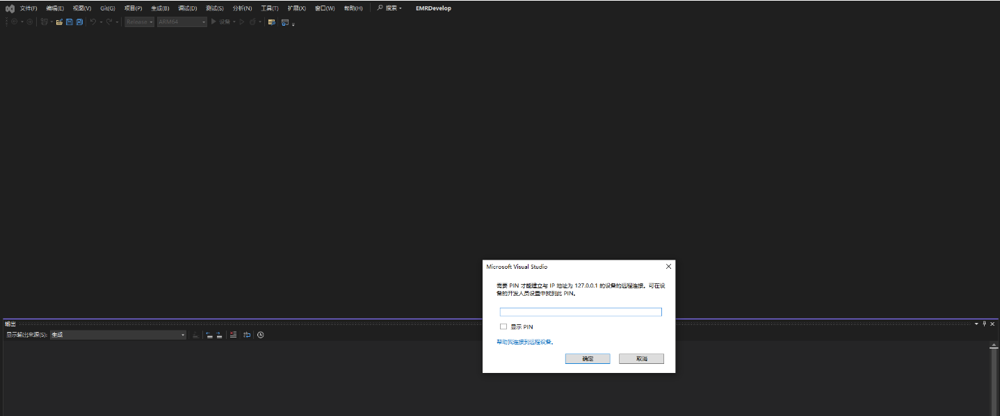
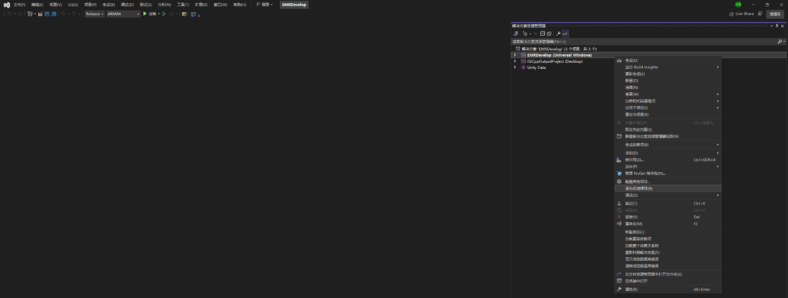

导出
将一个应用部署到Holoens2设备需要经过以下步骤：
- 在unity 菜单中依次选择 File -> Build Settings：
-

- 按下图设置 Build Settings 窗口内的各参数，点击 Build 按钮
-

- 选择导出的目标目录，然后点击 “选择文件夹” 按钮，等待导出完成
-

原则上MRTK是跨平台跨设备的，凡被MRTK支持的设备应该都能将其导出的工程部署到设备上，这里以Hololens2为例：
- 通过 USB线 将设备连接到电脑
- 确保在 Hololens2 设备中 开发者模式 已被打开，Setting -> uPDATE & Security -> For developers 下 Developer Mode 选项被打开
- 打开 Visual Studio 2022
-

- 点击右侧打开项目或解决方案，选择刚刚导出成功的项目工程文件，点击右下角的 “打开” 按钮
-

- 将Visual Studio 的生成方式设置为: Relase 或 Debug, 将平台架构设置为: ARM64，将部署方式设置为：设备，如下图：
-

- 在 Visual studio 菜单中依次选择 调试 -> 开始调试，带上头显等待部署成功
-

- 如果是第一次将应用程序从 Visual Studio 部署到Hololens2设备，将提示输入PIN码，这时，在Hololens2设备上，呼出开始菜单，依次选择 Settings -> Update & Security _> For Developers 打开开发设置面板，点击Pair按钮生成PIN码，在Visual Studio弹窗中输入此PIN码完成配对，如下图：
-

- 平台架构设置列表下没有 “设备” 选项，可能需要将 Visual studio 解决方案的启动项目从 IL2CPP 项目更改为 UWP 项目。 为此，请在“解决方案资源管理器”中右键单击项目，然后选择“设为启动项目”，如下图：
-
